Știri
Jocuri
CONFIRMAT28 octombrie 2026Anime Legacy SimulatorAnime Legacy Simulator: Update 3 e live, cu hartă nouă, sistem nou și mod nou
⚔️ Anime Legacy Simulator are un event oficial pentru Update 3, deja activ în joc. 📅 Când (ora României): • ▶️ A început: vineri, 23 oct,…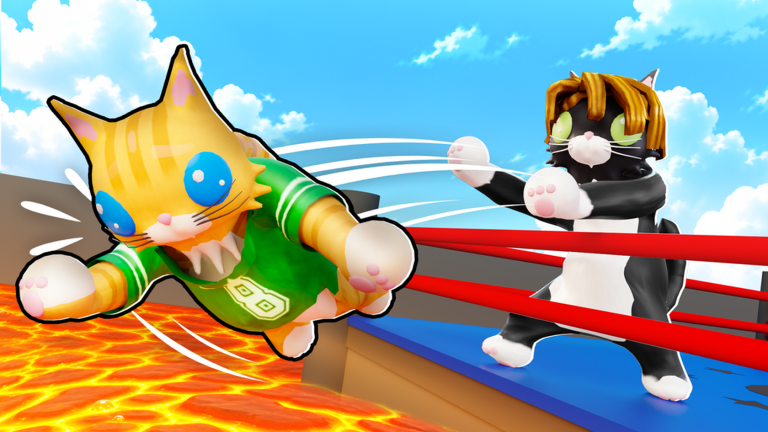
CONFIRMAT28 octombrie 2026Cat BattlesCat Battles: a venit Reaper-ul! Halloween Part 2 cu hărți noi, ține până sâmbătă
💀 Cat Battles are partea a doua de Halloween: „THE REAPER IS HERE”. Eventul oficial e deja activ în joc. 📅 Când (ora României): • ▶️ A…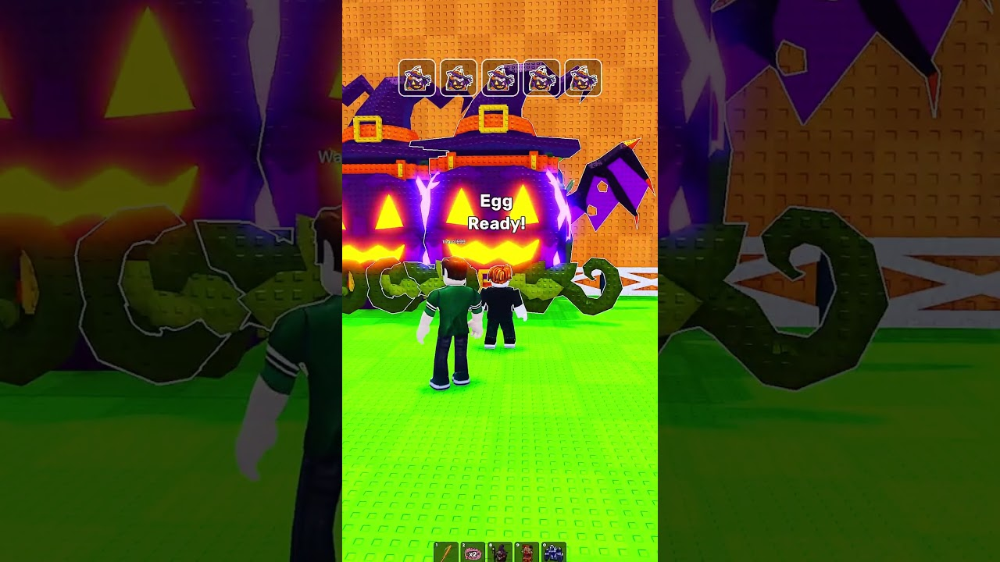
TREND SHORTS28 octombrie 2026Steal An EggCrispyClips: „1 DIN 5 E SECRET”, un format de testat cu 5 ouă
CrispyClips are un short din Steal An Egg, „I bought 5 Halloween eggs”, de 33 de secunde, urcat pe 18 oct pe la 23:13 (ora României). 📊…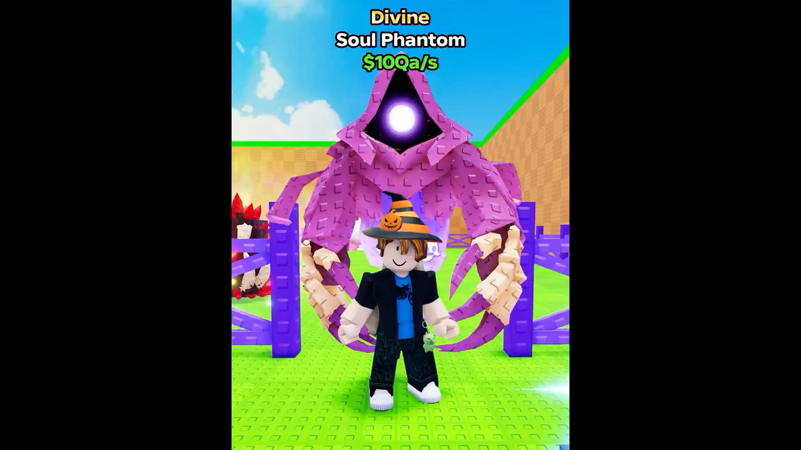
TREND SHORTS28 octombrie 2026Steal An EggNoob Bacon Real dă Candy Corn pe ouă: ~956K vizionări în Steal An Egg
Noob Bacon Real are un short din Steal An Egg, „I Traded Candy Corn for Eggs in Steal An Egg”, de 47 de secunde, urcat pe 18 oct pe la… TREND SHORTS28 octombrie 2026Murder Mystery 2
TREND SHORTS28 octombrie 2026Murder Mystery 2ROKEH trece de 960K cu „SECRET IN MM2 HALLOWEEN UPDATE”: meme sus, tutorial jos
ROKEH are un short din Murder Mystery 2, „SECRET IN MM2 HALLOWEEN UPDATE!😱👻”, de 48 de secunde, urcat pe 20 oct pe la 02:00 (ora… miercuri, 28 octombrie
Azi
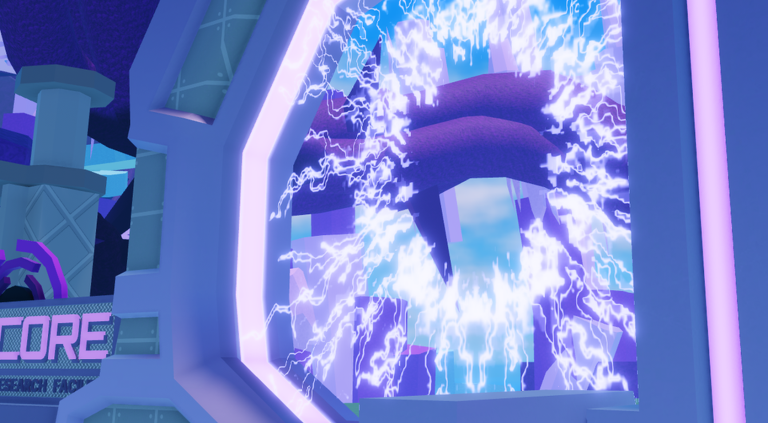
CONFIRMAT25 octombrie 2026Oaklands: „The Gateway Opens...” începe diseară la 20:00 și ceva vine PERMANENT în joc
🎃 Oaklands are un event oficial nou: „The Gateway Opens...”, cu subtitlul „... can you help it?”. E publicat de Typical Developers,…Oaklands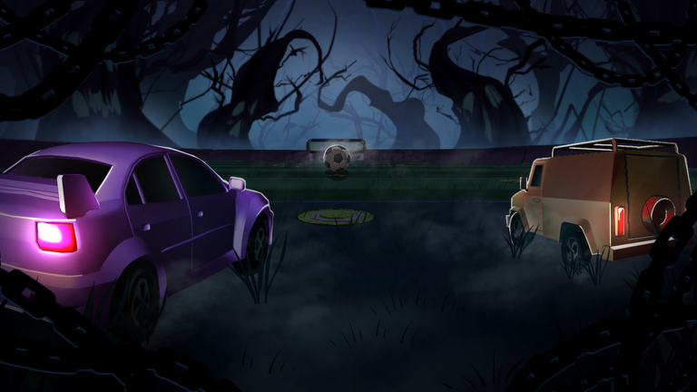
CONFIRMAT25 octombrie 2026Turbo Soccer: la 4 săptămâni, al 3-lea joc de sport pe Roblox, peste Blue Lock: Rivals + TURBOWEEN
🎃 UPDATE 25 oct (✅ CONFIRMAT, pagina oficială a eventului pe Roblox): TURBOWEEN Part 1 De duminică, 25 oct, 19:00, până duminică, 1 nov,…Turbo Soccer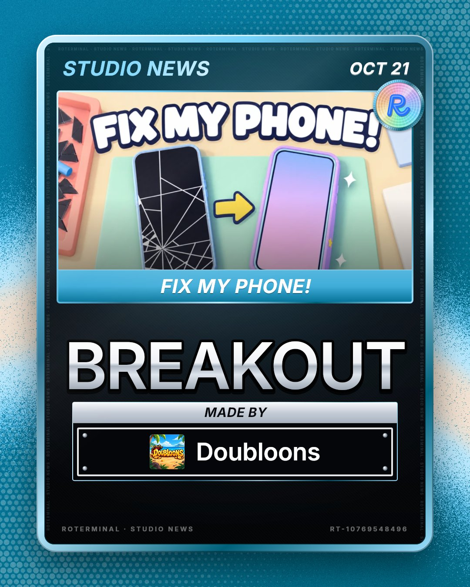
CONFIRMAT25 octombrie 2026Fix My Phone!: peste 10.000 de jucători la doar 2 săptămâni de la lansare
Fix My Phone! are doar 2 săptămâni și avea 10.036 de jucători online în același timp, de 5,4 ori mai mulți decât cu o zi înainte, la…Fix My Phone!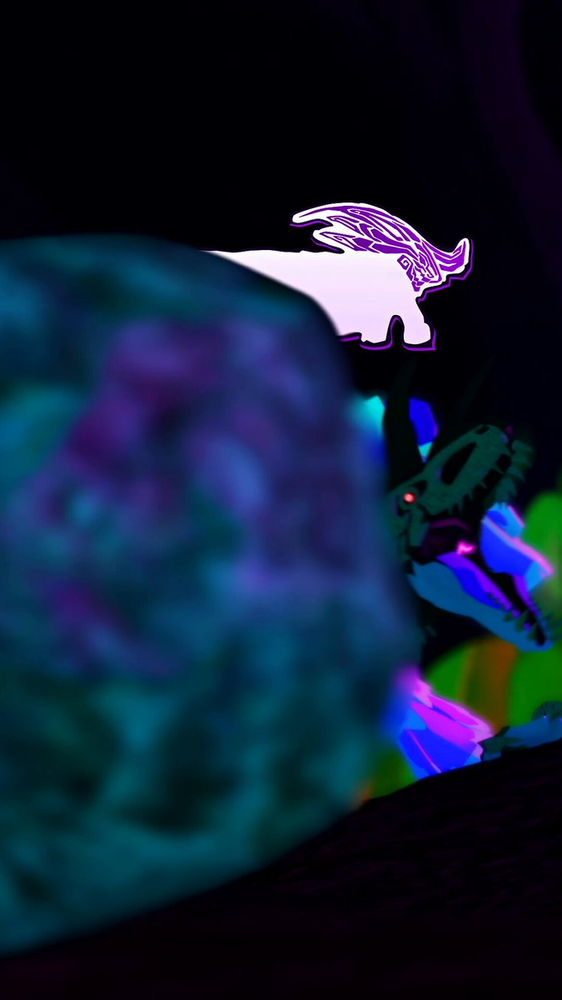
CONFIRMAT25 octombrie 2026Creatures of Sonaria: Cordyllo, creatura-ciupercă de Halloween inspirată de cordyceps
Creatures of Sonaria are o creatură nouă de Halloween: Cordyllo, o ciupercă inspirată de cordyceps (ciuperca-parazit). 🍄 Contul oficial…Creatures of Sonaria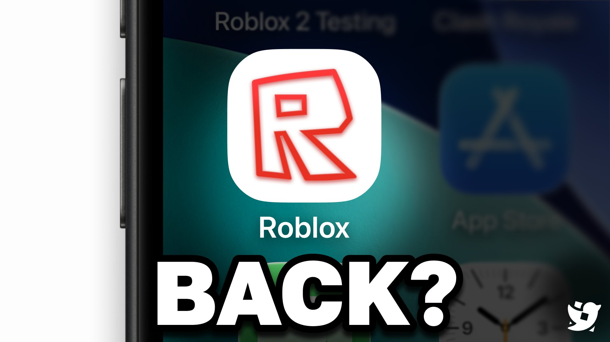
CONFIRMAT25 octombrie 2026Iconița clasică Roblox a revenit pentru cine folosește tema clasică
Iconița clasică a aplicației Roblox (R-ul roșu, pe fond alb) pare să fi revenit. Dacă folosești tema clasică a aplicației, ea înlocuiește…Roblox (platformă)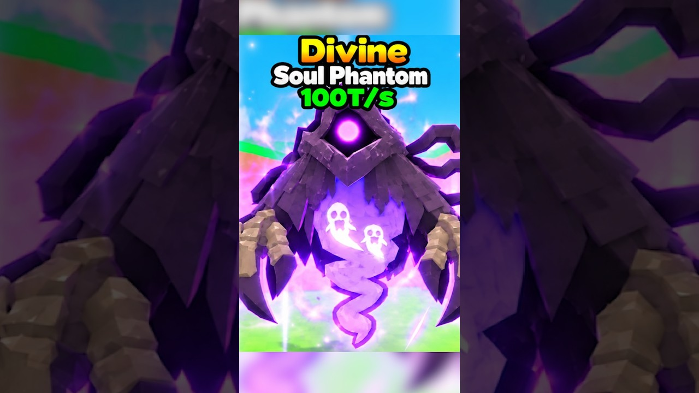
TREND SHORTS25 octombrie 2026PUNPKIN BLX a furat toate ouăle de Halloween din server
PUNPKIN BLX are un short din Steal an Egg, „I stole all the Halloween eggs and got the rarest pet”, de 142 de secunde, postat pe 20 oct pe…Steal An Egg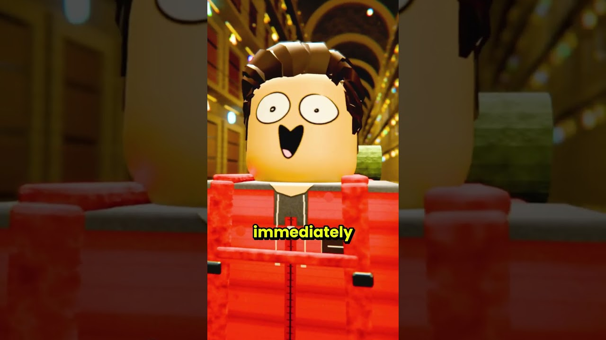
TREND SHORTS25 octombrie 2026Noobified trece de 2M cu „O cutie neagră pică din cer”
Noobified are un short nou, „A Black MYSTERY Box Falls From The SKY”, de 173 de secunde, postat pe 21 oct pe la 01:00 (ora României). Avea…Steal An Egg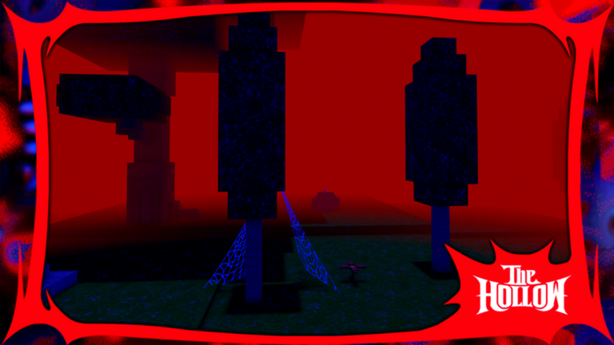
CONFIRMAT25 octombrie 202699 Nights in the Forest: mini-eventul The Hollow începe azi la 17:00
🔦 99 Nights in the Forest are un mini-event oficial pentru The Hollow, eventul de Halloween al Roblox. Pe pagina oficială se numește „The…99 Nights in the Forest